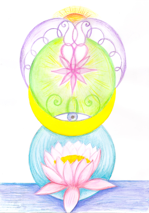
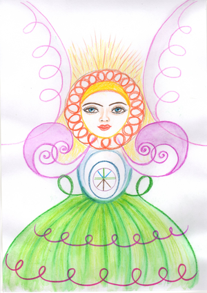
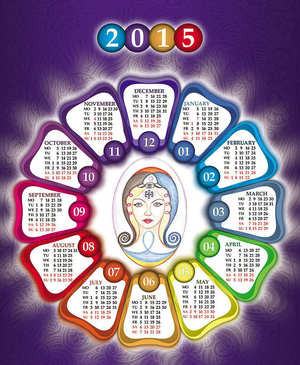
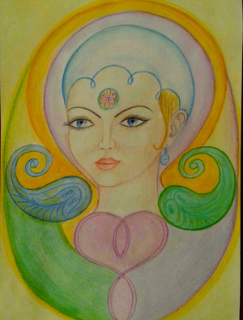
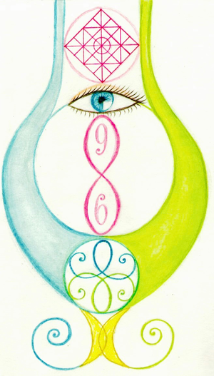

Итоги интерактивной работы с Фазовым портретом Земли (ИРФПЗ)
Дорогие друзья! 25 ноября 2018 года состоялся первый всемирный интерактивный сеанс работы с Фазовым портретом Земли. Сеанс проходил на уровне чистоты и гармонии, достигнутых в процессе коррекции информаций во Времени и пространстве за период с 2010 по 2018 гг. по ФП Материнство. За это время получено пять ФП Времени (текущих годов), с которыми регулярно проводилась работа. В сентябре во время коррекции по эскизу ФП 2018 года на сфере Времени появился символ Чаши — ФП Земли. Таким образом проявилась гармония Времени и Пространства (ПВК).
Внутри ФП Земли находится информация о 2018 годе. Энергоинформационный образ в Фазовом портрете является созидательной копией Времени, поэтому ФП Земли можно рассматривать как пособие для коррекции всех аспектов нашей планеты: биологических, ноосферных, социальных, экологических.
Первый интерактивный сеанс работы по ФП Земли задал процесс позитивных планетарных метаморфоз. В результате коррекции произошло обновление информационных записей Земли, восстановление изначальной информации (заложенной нашим Творцом) созидательного, счастливого развития человечества и планеты — Матушки Земли.
В процессе сеанса мы работали одновременно на индивидуальном, родовом и планетарном уровнях. Весь мир получил позитивное и гармоничное воздействие. И мы можем сознательно принять участие в поддержании этих направлений энергоинформационного преображения человека, Человечества, планеты. Главная задача участников ИРФПЗ (интерактивной работы по ФП Земли) – соответствовать заданному уровню.
|  |  |
|  |  |
|  |  |